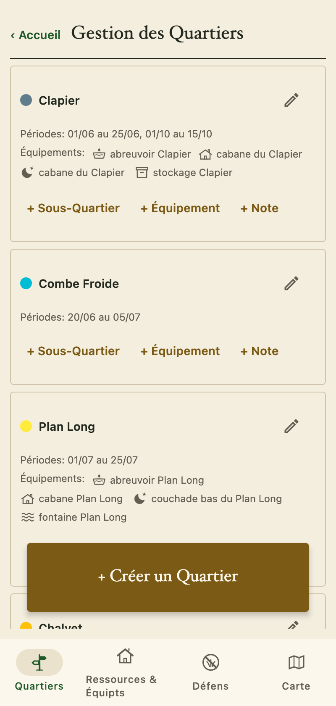
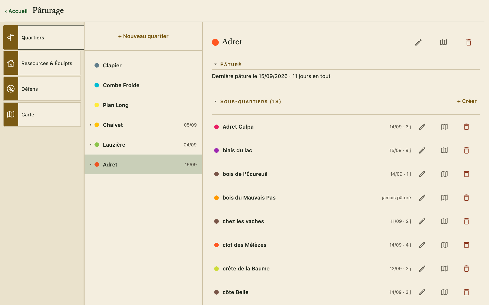
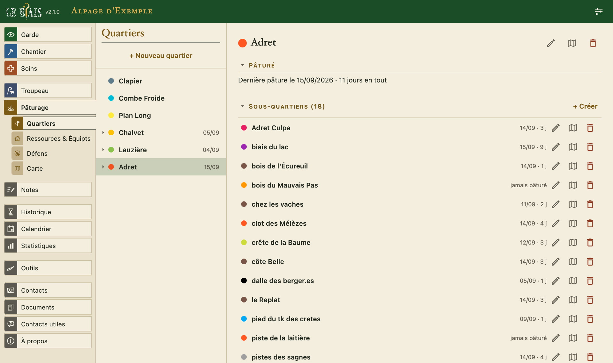
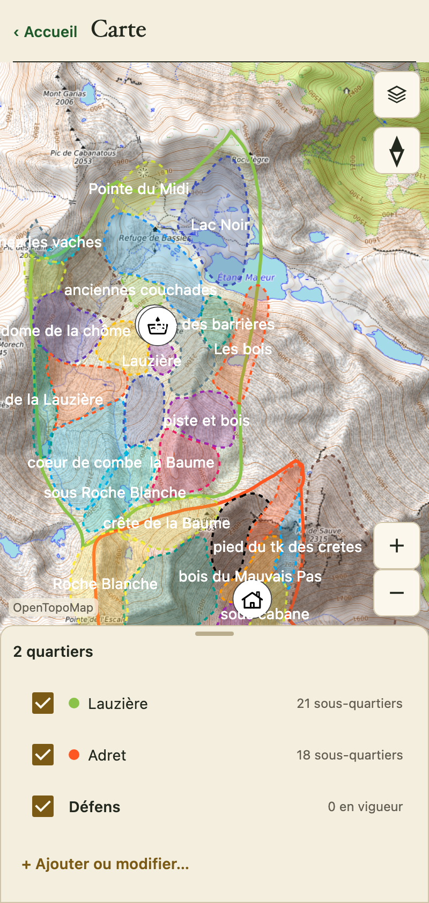
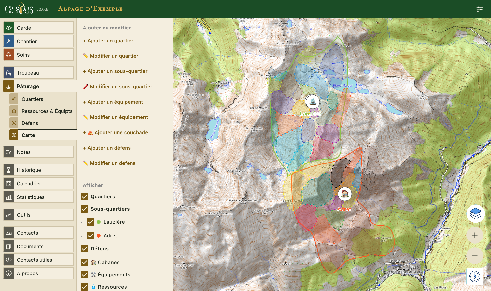

Documentation
Documentation
Décrire le territoire : ses quartiers, ses équipements, ses points d'eau, les zones à éviter — et le dessiner sur la carte.
Un quartier est un secteur de pâturage ; il peut être découpé en sous-quartiers. Pour chacun :
La fiche d'un quartier affiche aussi ce que les gardes y ont relevé : dernière pâture le…, n jours en tout, ou « jamais pâturé ». C'est le pâturage réalisé, à comparer au pâturage prévu.



Tout ce qu'il faut savoir trouver — et dans quel état :
Chaque catégorie accepte vos propres types, avec l'icône de votre choix. Une fiche d'équipement porte :
La liste se filtre par catégorie, par état et par quartier.
Un défens est une zone où le troupeau ne doit pas aller : une plantation, un captage, une combe où nichent les tétras. Il se trace librement sur la carte, sans tenir compte des limites des quartiers — un même défens peut en chevaucher plusieurs, ou sortir de l'alpage.
Chaque défens porte :
Un document se joint de deux façons : Joindre un fichier le range aussi dans vos documents, sous l'étiquette Défens ; Choisir un document existant relie un papier déjà classé — le même contrat peut ainsi servir à plusieurs zones.
L'application compare la période à la date du jour, sans que vous ayez rien à cocher :
L'onglet Défens du pâturage les liste, ceux qui sont actifs en tête, et se filtre par motif. Depuis une fiche, Voir sur la carte y mène et Modifier le contour rouvre le tracé.
Un défens ne déclenche aucune alerte quand un parcours de garde le traverse : c'est un repère sur la carte, pas un garde-fou.
La carte affiche les quartiers, sous-quartiers, défens, cabanes, équipements et ressources, avec le nom des zones écrit dessus. Toucher un défens ouvre sa fiche.
Les réglages d'affichage et les ajouts se rangent à part de la carte, selon l'écran :
Le tiroir ou le volet porte la rubrique Afficher : une case par famille (quartiers, sous-quartiers, défens, cabanes, équipements, ressources), et, dépliés sous elle, les quartiers, leurs sous-quartiers et les défens un à un. Une case masque une zone, un clic sur son nom cadre la carte dessus. Plus bas, la rubrique Ajouter ou modifier lance les tracés (voir plus bas).


Quatre boutons de papier restent à leurs coins, quel que soit le mode : Calques (les fonds), la boussole (un toucher remet le nord en haut ; la glisser fait tourner la carte), Zoomer et Dézoomer. Au téléphone et à la tablette, un cinquième, Me situer, centre la carte sur votre position, relevée par le GPS : l'appareil demande l'autorisation la première fois. Le poste de bureau n'a pas de GPS, donc pas ce bouton.
En bas à gauche, une petite mention nomme les sources des fonds affichés (« © IGN · OpenTopoMap »).
Calques ouvre les Fonds de carte : on y ajoute les fonds qu'on veut superposer, chacun avec son opacité et son rang (monter, descendre, supprimer). Sont proposés : OpenTopoMap, OpenStreetMap, IGN Plan, IGN Scan 25, IGN Satellite (photographies aériennes), IGN Cadastre et Esri Satellite. Un cadastre à moitié transparent sur une photo aérienne, par exemple. La mention de la source de chaque fond se lit sous son nom. Les calques choisis sont les mêmes dans l'outil Combien de filets ?.
Le cadastre se superpose aux autres fonds mais ne se télécharge pas : il ne s'affiche qu'avec du réseau, ou là où vous l'avez déjà regardé.
Les actions de la rubrique Ajouter ou modifier :
Pendant un tracé, le menu de gauche du poste ne répond plus ; quitter un tracé en cours demande confirmation : rien ne se perd par un geste malheureux.
Depuis l'onglet Quartiers des statistiques, Voir sur la carte rejoue la saison : jour après jour, les sous-quartiers pâturés s'allument, puis s'estompent. La vitesse et la durée du fondu se règlent.
Là-haut, pas de réseau : il faut emporter la carte. Dans les paramètres, Cartes hors ligne → Rapatrier avant de monter télécharge les tuiles qui couvrent vos quartiers, et seulement elles. Le choix des fonds à emporter se fait par une case à cocher : IGN Plan, IGN Satellite (l'orthophoto) et OpenTopoMap. L'écran annonce le nombre de tuiles et le poids avant de commencer, et sous chaque fond la mention de sa source.
La ligne Altitude (pour Combien de filets ?) est cochée par défaut : elle emporte aussi les tuiles d'altitude des quartiers, que l'outil Combien de filets ? utilise pour tenir compte de la pente sans réseau. Leur source (Terrain Tiles : Mapzen/Tilezen, SRTM et autres sources ouvertes, AWS Open Data) est créditée sur l'écran.
Ce choix est propre à l'appareil : il ne part pas avec le projet, et le binôme qui le partage n'emporte pas forcément les mêmes fonds. L'écran dit aussi le poids des tuiles gardées, et permet de les Vider.
Tracez d'abord vos quartiers : sans contour, il n'y a pas de zone à emporter. Le Scan 25 de l'IGN, le cadastre, OpenStreetMap et Esri Satellite ne se téléchargent pas d'avance : leur licence ou la politique de leur serveur ne l'admet pas. Ils s'affichent avec du réseau, et restent consultables hors ligne là où vous êtes déjà passé, car l'application garde ce qu'elle a affiché.